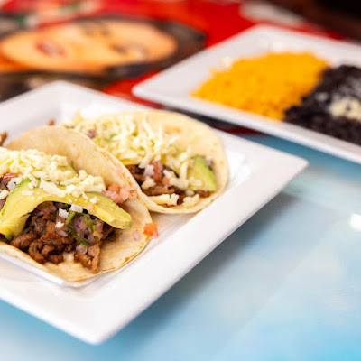
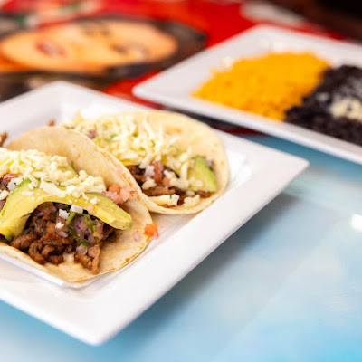
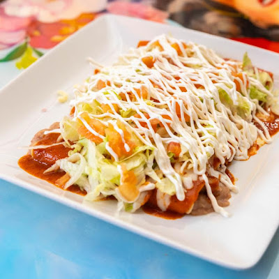
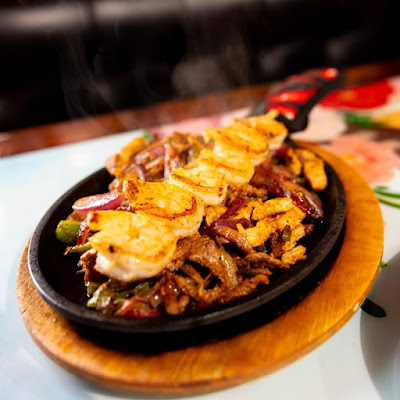
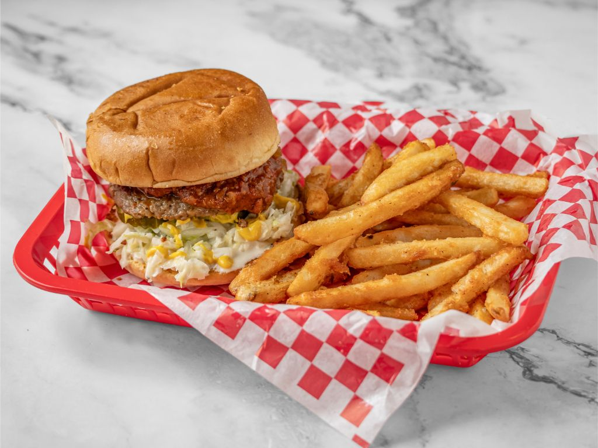
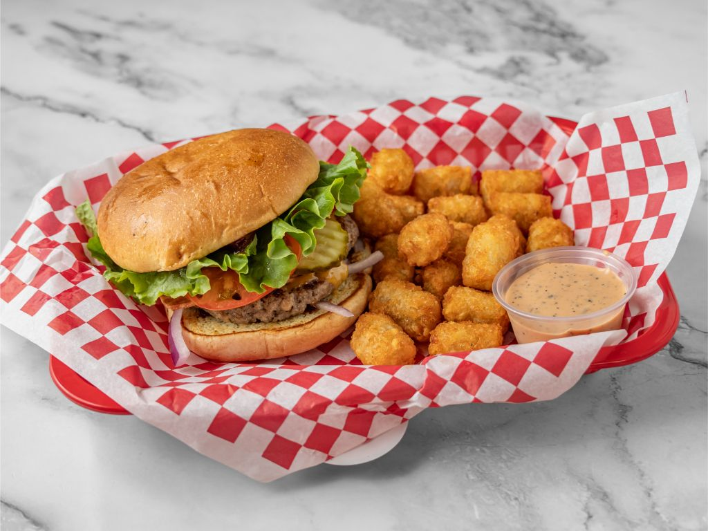
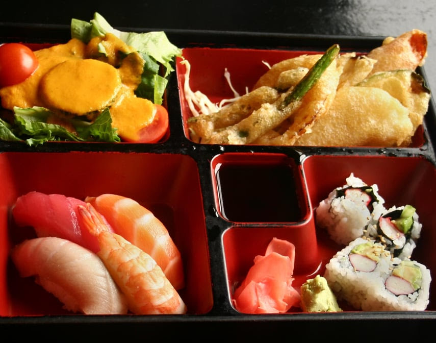
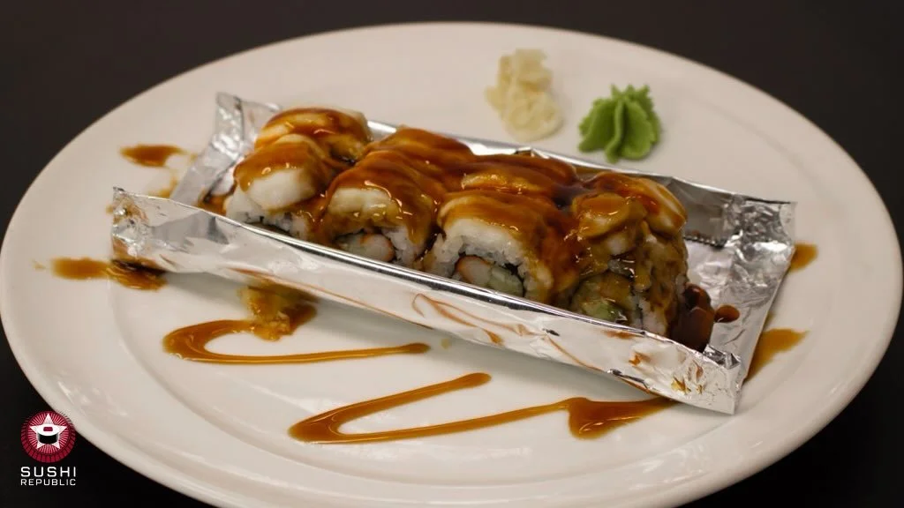
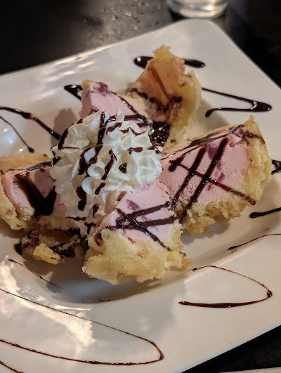

Crazy Tacos
Two flour tortillas tacos, filled with steak, cheese, sliced avocadoes and pico de gallo. Served with Spanish rice and black beans.
Welcome to my blog about my recommendations on where to eat after class at the Pretty building. These restaurant are all about a short walk away of about 5 minutes. These will be a varity of restuarants, so that hopefully every reader will enjoy at least one of these place. I will showcase 3 restuarants with 3 of their dishes and pictures of them.
This is a moderately priced mexican resetuarant. Generally opened 11am-10pm, closed on Sunday. 332 Tate St, Greensboro, NC 27403.
Crazy Tacos
Two flour tortillas tacos, filled with steak, cheese, sliced avocadoes and pico de gallo. Served with Spanish rice and black beans.
Burritos Rancheros
Two burritos with beef, melted cheese, special sauce, rice, salad, guacamole and sour cream.
Texanas
Tender beef, chicken and shrimp, grilled onions, peppers and tomatoes. Served with guacamole, sour cream, rice, beans and tortillas.
This is a moderately priced vegan burger resetuarant. Opened everyday 11am-10pm. 413 Tate St, Greensboro, NC 27403.
Where Art Thou Romeo Burger

With house sauce, lettuce, tomatoes, grilled onions, cheese, and pickles.
Tobacco Road Burger
With chilli, coleslaw, grilled onions, mustard, and pickles
Romeo BBQ Bacon Burger
With Cheese, tomatoes, lettuce, bacon, bbq sauce, onioins, mayo, and pickles
This is a moderately priced sushi restuarant. Opened 11:30am-2:30pm, 5-9:30pm, closed sundays. 329 Tate St, Greensboro, NC 27403.
Sushi Bento Box
All boxes served with miso soup, 4 piece California roll, salad & spring rolls, Substitute in vegetable tempura for spring rolls for $.75.
Crazy Roll
Features crab, avocado, cucumber inside, topped with baked red snapper, drizzled with Japanese mayo and spicy eel sauce.
Tempura Bomb
Green tea, mango, or strawberry ice cream wrapped in sponge cake & tempura fried topped with chocolate sauce, whipped cream